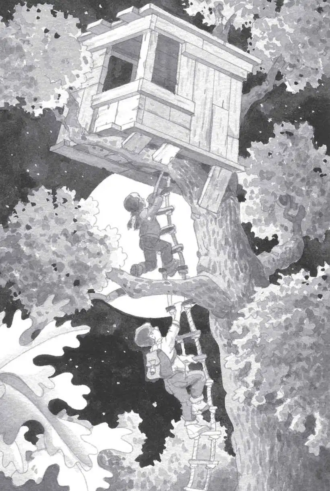

“Jack!” whispered a voice.
Jack opened his eyes. He saw a figure in the moonlight.
“Wake up. Get dressed.” It was his sister, Annie.
Jack turned on his lamp. He rubbed his eyes.
Annie was standing beside his bed. She wore jeans and a sweatshirt.
“Let’s go to the tree house,” she said.
“What time is it?” asked Jack. He put on his glasses.
“Don’t look at your clock,” said Annie.
Jack looked at his clock. “Oh, man,” he said. “It’s midnight. It’s too dark.”
“No, it isn’t. The moon makes it bright enough to see,” said Annie.
“Wait till morning,” said Jack.
“No—now,” said Annie. “We have to find the fourth M thing. I have a feeling that the full moon might help us.”
“That’s nuts,” said Jack. “I want to sleep.”
“You can sleep when we come back home,” said Annie. “No time will have passed.”
Jack sighed. “Oh, brother,” he said.
But he got out of bed.
“Yay!” whispered Annie. “Meet you at the back door.” She tiptoed out of Jack’s room.
Jack yawned. He pulled on his jeans and sneakers and a sweatshirt. He put his notebook and pencil into his backpack. Then he crept down the stairs.
Annie opened the back door. Quietly, they stepped outside.
“Wait—” said Jack. “We need a flashlight.”
“No, we don’t. I told you—the moon will light our way,” said Annie. And she took off.
Jack sighed, then followed her.
Annie was right, thought Jack. The moon was so bright that he could see his shadow. Everything seemed washed with silver.
Soon they left their street. Annie led the way into the Frog Creek woods. It was much darker under the shadows of the trees.
Jack looked up, searching for the tree house.
“There!” said Annie.
The magic tree house was shining in the moonlight.
Annie grabbed the rope ladder and started climbing up.
“Careful—go slowly,” said Jack.
He followed her up the ladder and into the tree house.

Moonlight streamed through the window.
It shone on the letter M that shimmered on the wooden floor.
It shone on the three M things that rested on the M: a moonstone from the time of the ninjas, a mango from the Amazon rain forest, and a mammoth bone from the Ice Age.
“We need just one more M thing,” said Annie, “to free Morgan from her spell.”
Squeak.
“Peanut!” said Annie.
In the dim light, Jack saw a tiny mouse. She sat on an open book.
“You didn’t expect to see us this late, did you?” said Annie.
She picked up Peanut. And Jack picked up the open book.
“So where are we going this time?” Annie asked him.
Jack held the book up to the moonlight.
“Uh-oh,” he said. “I knew we should have brought a flashlight. I can’t read a thing.”
He could make out diagrams and shadowy pictures. But he couldn’t read a word.
“Look at the cover,” said Annie.
The letters were bigger on the cover. Jack squinted at them.
“It’s called Hello, Moon,” he said.
Annie gasped. “We’re going to the moon?”
“Of course not,” said Jack. “It’s impossible to go to the moon without tons of equipment.”
“Why?”
“There’s no air. We couldn’t breathe. Not only that, we’d boil to death if it was day and freeze to death if it was night.”
“Yikes,” said Annie. “So where do you think we are going?”
“Maybe a place where people train to be astronauts,” said Jack.
“That sounds neat,” said Annie.
“Yeah,” said Jack. He’d always wanted to meet astronauts and space scientists.
“So say the wish,” said Annie.
Jack opened the book again. He pointed to a picture of a dome-shaped structure.
“I wish we could go there,” he said.
The wind started to blow.
The tree house started to spin.
It spun faster and faster and faster.
Then everything was silent.
Absolutely silent. As quiet and still as silence could be.